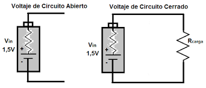
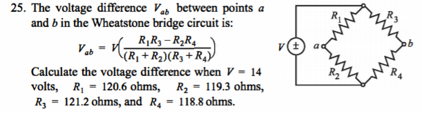
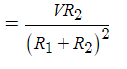
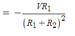
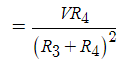
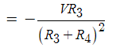
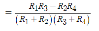

PROPAGACION DE ERROR
LA ECUACION GENERAL ES:
LA ECUACION DERIVADA DE R1:
LA ECUACION DERIVADA DE R2:
LA ECUACION DERIVADA DE R3:
LA ECUACION DERIVADA DE R4:
LA ECUACION DERIVADA DE V:
El circuito en forma de diamante del puente de Wheatstone, cuyo concepto fue desarrollado por
Charles Wheatstone, se puede utilizar para medir con precisión valores de resistencia desconocidos,
o como un medio para calibrar instrumentos de medición, voltímetros, amperímetros, etc., mediante
el uso de una resistencia variable y una fórmula matemática simple.
Aunque hoy en día los multímetros digitales proporcionan la forma más sencilla de medir una resistencia.
El puente de Wheatstone puede se puede utilizar para comparar una resistencia desconocida con la de una
resistencia conocida para determinar su valor, lo que permite medir valores muy bajos de resistencias en el rango de mili-ohmios (mΩ).
El circuito de puente de Wheatstone (o puente de resistencia) se puede utilizar en una serie de aplicaciones y, en la actualidad,
con los amplificadores operacionales modernos podemos utilizar el circuito de puente de Wheatstone para conectar varios transductores y sensores a estos circuitos amplificadores.
El circuito del puente de Wheatstone no es más que dos simples arreglos en serie-paralelo de resistencias conectadas entre un terminal
de suministro de voltaje y tierra que producen una diferencia de voltaje cero entre las dos ramas paralelas cuando están balanceadas. Un circuito de puente
de Wheatstone tiene dos terminales de entrada y dos terminales de salida que constan de cuatro resistencias configuradas en una disposición
familiar similar a un diamante, como se muestra. Esto es típico de cómo se dibuja el puente de Wheatstone.
CONCLUSION:
Lo que se busco en esta resolucion de ejercicio es que es importante dar cada detalle a la hora de la resolucion y en cuestion de instanciar los errores
o valores de cada variable ser coherentes, y que las formulas ayudan al resultado
++++++++++++++++++++++++++++++++++++++++++++++++++++++++++++++++++++++++++++++++++++++++++++++++++++++++++++
A continuacion se presentara resultados a partir de operacion que tengan que ver con este tema obviamente.
*Primero al tener conocimiento de los valores de las variables de la ecuacion y sus errores se procede a
encontrar sus derivadas de las varibles,
*Segundo encontramos la propagacion de error
*Tercero el Intervalo en el que se encuentra el valor verdadero
*Cuarto El error porcentual